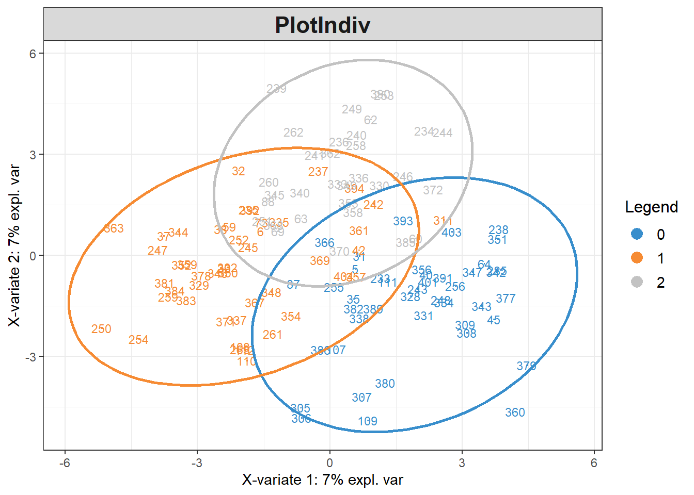
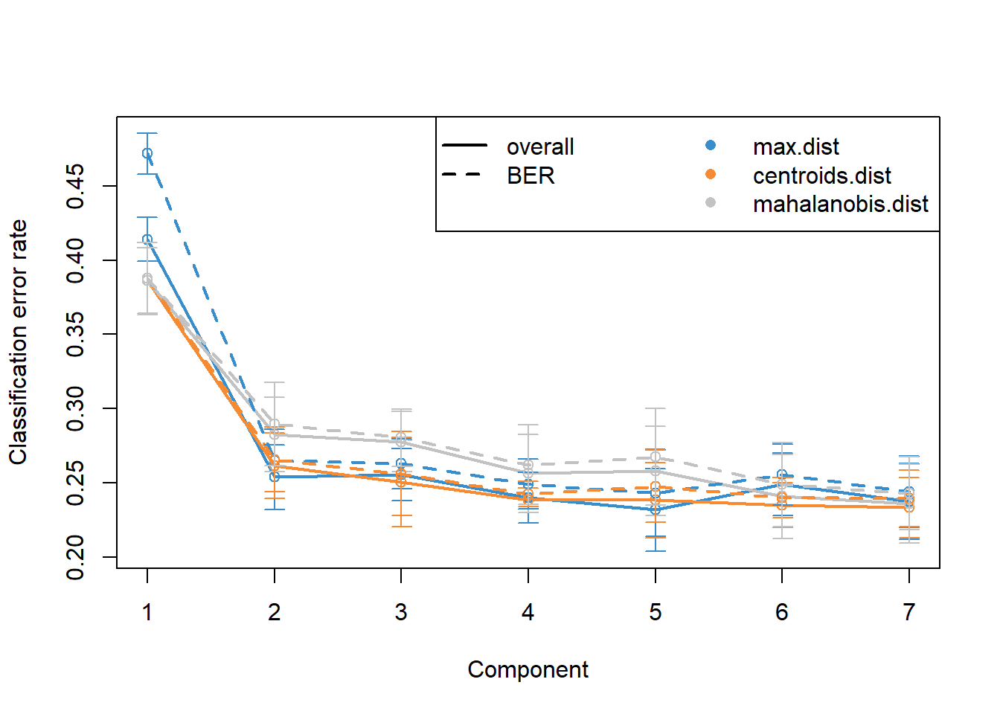
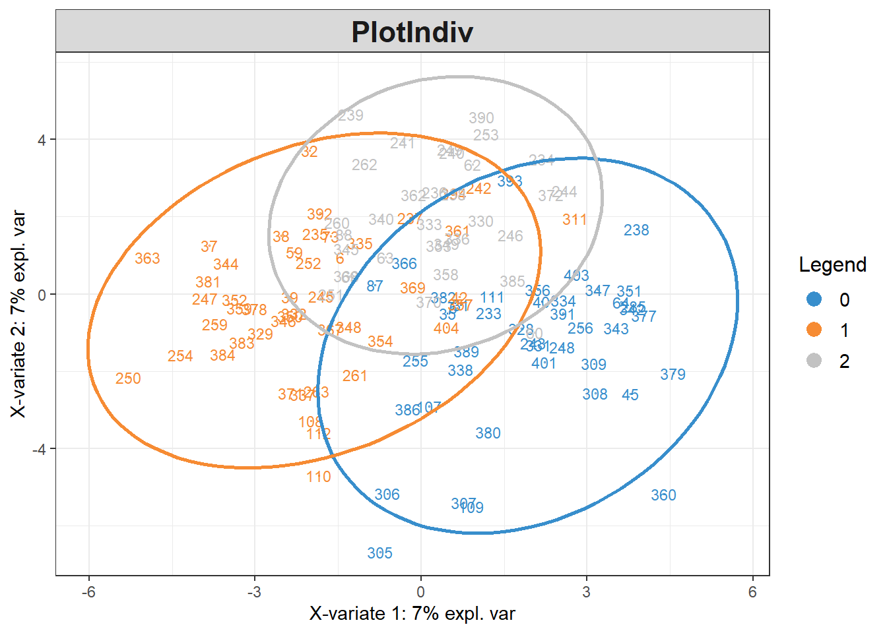

Chapter 3 Finding peaks discriminating callow and mature F. sanguinea workers
# devtools::install_github("mixOmicsTeam/mixOmics", ref = "143d31f9629bc83f1f27272ba6b7a2aaef0ee0e8")
suppressMessages({
library(sangchem)
library(dplyr)
library(mixOmics)
})
# load data
data("development_data")
data("mass_spectra_data")
DA_data <- dplyr::filter(development_data, caste=="worker", !remarks %in% c("aggression actor", "aggression target", "queenless colony")) %>%
dplyr::select(colony, species, callow, census_date, chromatogram_ID, sang_prop) %>%
split(list(.$colony, .$census_date), drop=TRUE) %>%
lapply(function(x){if(sum(x$callow)==0) return(NULL); x}) %>%
{function(x) x[!unlist((lapply(x, is.null)))]}() %>%
purrr::map2(seq_along(.), function(x,y){x$group <- y; x}) %>%
{function(x) do.call(rbind, x)}()
Y <- (DA_data$callow==1) + (DA_data$species=="F. sanguinea")
peak_prop <- peak_proportions_table(mass_spectra_data[mass_spectra_data$chromatogram_ID %in% DA_data$chromatogram_ID,])
peak_prop <- peak_prop[match(DA_data$chromatogram_ID, rownames(peak_prop)),]
# replace zeros with a small number before transformation
peak_prop[peak_prop==0] <- 10^-16
# apply central log ratio transformation
peak_transformed <- t(apply(peak_prop, 1, clr_transformation))
PCA_callow_discr <- prcomp(peak_transformed, scale. = TRUE)discr_analysis_callow <- splsda(PCA_callow_discr$x, Y=Y ,multilevel=DA_data$group,
ncomp=7, scale = FALSE)## Splitting the variation for 1 level factor.
perf.discr_analysis_callow <- perf(discr_analysis_callow,
validation = "Mfold",
folds = 4,
progressBar = FALSE,
auc = TRUE,
nrepeat = 10,
scale = FALSE)## Splitting the variation for 1 level factor.
selected_n <- 5
discr_analysis_callows_tuned <- tune.splsda(PCA_callow_discr$x,
Y=Y,
multilevel=DA_data$group,
ncomp = selected_n,
test.keepX = seq(1:120),
dist = 'mahalanobis.dist',
validation = 'loo',
progressBar = FALSE,
scale = FALSE) ## Noe that the number of components cannot be reliably tuned with nrepeat < 3 or validaion = 'loo'.
## Splitting the variation for 1 level factor.discr_analysis_callows_res <- splsda(PCA_callow_discr$x,Y=Y,
multilevel= DA_data$group,
keepX=discr_analysis_callows_tuned$choice.keepX,
ncomp=selected_n,
scale = FALSE)## Splitting the variation for 1 level factor.
3.1 Determining callow markers
# quantify predicted species (callow workers closer to one)
predicted_species <- calculate_SII(peak_prop, discr_analysis_callows_res, PCA_callow_discr, predicted_category=3)
# build matrix to calculate correlation of `prediction score` and peak relative abundances
predicted_species <- matrix(predicted_species$predicted_species[match(rownames(peak_prop), predicted_species$chromatogram_ID)], ncol=1, dimnames = list(rownames(peak_prop), "predicted_species"))
library(Hmisc)
cor_p_val<-rcorr(cbind(peak_prop, predicted_species))
cor_p_val$P[cor_p_val$r==1]<-0
# significance threshold = 0.05
significant_correlations <- cor_p_val$r["predicted_species",][cor_p_val$P["predicted_species",]<0.05]
peaks_callow_sig <- names(significant_correlations)[significant_correlations>0]
peaks_callow_sig <- as.numeric((setdiff(peaks_callow_sig,"predicted_species")))
# checking the effect of each peak on the prediction score for each of the
# three categories (F. fusca, mature F. sanguinea, callow F. sanguinea)
# prepare input data (one peak present per one sample)
unit_input <- diag(rep(1,ncol(peak_prop)))
colnames(unit_input) <- rownames(unit_input) <-colnames(peak_prop)
# predict each category for each peak
peak_prediction <- purrr::reduce(lapply(1:3, function(x) calculate_SII(unit_input, discr_analysis_callows_res, PCA_callow_discr, predicted_category=x)), merge, by="chromatogram_ID")
colnames(peak_prediction)[1] <- "peak ID"
peak_prediction[,2:4] <- apply(peak_prediction[,2:4], 2, function(x) {x <- x-mean(x); x/sd(x)})
colnames(peak_prediction)[2:4] <- c("fusca", "sanguinea", "callow")
# choose peaks positively associated with being callow and negatively with two other categories
peaks_callow_predictors <- peak_prediction[peak_prediction$fusca<0&peak_prediction$sanguinea<0&peak_prediction$callow>0,"peak ID"]
peaks_callow <- intersect(peaks_callow_sig, peaks_callow_predictors)
print(peaks_callow)## [1] 12 29 36 38 49 66 67 72 73 88 89 92# peaks negatively related with being a callow worker
top_negative <- peak_prediction[order(peak_prediction$callow),][1:10,c("peak ID", "callow")]
top_negative[["sanguinea marker"]] <- top_negative[["peak ID"]] %in% peaks_sang
top_negative[["fusca marker"]] <- top_negative[["peak ID"]] %in% peaks_fusca
rownames(top_negative) <- NULL
print(top_negative)## peak ID callow sanguinea marker fusca marker
## 1 47 -2.512163 TRUE FALSE
## 2 2 -2.445127 FALSE FALSE
## 3 24 -2.417967 TRUE FALSE
## 4 14 -2.390166 FALSE TRUE
## 5 35 -2.097678 TRUE FALSE
## 6 70 -1.855523 FALSE FALSE
## 7 48 -1.483958 FALSE FALSE
## 8 111 -1.455698 TRUE FALSE
## 9 30 -1.355093 TRUE FALSE
## 10 77 -1.236902 TRUE FALSE3.2 Determining mature F. sanguinea markers
# quantify predicted species (mature F. sanguinea closer to one)
predicted_species <- calculate_SII(peak_prop, discr_analysis_callows_res, PCA_callow_discr, predicted_category=2)
# build matrix to calculate correlation of `prediction score` and peak relative abundances
predicted_species <- matrix(predicted_species$predicted_species[match(rownames(peak_prop), predicted_species$chromatogram_ID)], ncol=1, dimnames = list(rownames(peak_prop), "predicted_species"))
library(Hmisc)
cor_p_val<-rcorr(cbind(peak_prop, predicted_species))
cor_p_val$P[cor_p_val$r==1]<-0
# significance threshold = 0.05
significant_correlations <- cor_p_val$r["predicted_species",][cor_p_val$P["predicted_species",]<0.05]
peaks_mature_sig <- names(significant_correlations)[significant_correlations>0]
peaks_mature_sig <- as.numeric((setdiff(peaks_mature_sig, "predicted_species")))
# choose peaks positively associated with being mature F. sanguinea and negatively with two other categories
peaks_mature_predictors <- peak_prediction[peak_prediction$fusca<0&peak_prediction$sanguinea>0&peak_prediction$callow<0,"peak ID"]
peaks_mature <- intersect(peaks_mature_sig, peaks_mature_predictors)
print(peaks_mature)## [1] 21 30 40 52 56 57 61 71 78 79 85 95 102 103 114 1173.3 Session info
## R version 4.1.3 (2022-03-10)
## Platform: x86_64-w64-mingw32/x64 (64-bit)
## Running under: Windows 10 x64 (build 22631)
##
## Matrix products: default
##
## locale:
## [1] LC_COLLATE=English_Bahamas.1252 LC_CTYPE=English_Bahamas.1252 LC_MONETARY=English_Bahamas.1252
## [4] LC_NUMERIC=C LC_TIME=English_Bahamas.1252
## system code page: 1250
##
## attached base packages:
## [1] stats graphics grDevices utils datasets methods base
##
## other attached packages:
## [1] rstatix_0.7.2 ggpubr_0.6.0 Hmisc_4.7-1 Formula_1.2-4 survival_3.2-13
## [6] mixOmics_6.18.1 ggplot2_3.4.4 lattice_0.20-45 MASS_7.3-55 stringi_1.8.3
## [11] DHARMa_0.4.6 lmerTest_3.1-3 lme4_1.1-29 Matrix_1.5-1 dplyr_1.1.4
## [16] sangchem_0.0.9000
##
## loaded via a namespace (and not attached):
## [1] backports_1.4.1 plyr_1.8.9 igraph_1.3.5
## [4] splines_4.1.3 BiocParallel_1.28.3 usethis_2.1.6
## [7] GenomeInfoDb_1.30.1 gap.datasets_0.0.5 scater_1.22.0
## [10] digest_0.6.29 foreach_1.5.2 htmltools_0.5.2
## [13] viridis_0.6.4 fansi_1.0.3 checkmate_2.3.1
## [16] magrittr_2.0.2 memoise_2.0.1 ScaledMatrix_1.2.0
## [19] cluster_2.1.2 doParallel_1.0.17 remotes_2.4.2
## [22] matrixStats_1.2.0 rARPACK_0.11-0 jpeg_0.1-9
## [25] colorspace_2.1-0 ggrepel_0.9.4 xfun_0.41
## [28] callr_3.7.3 RCurl_1.98-1.9 jsonlite_1.8.8
## [31] iterators_1.0.14 glue_1.6.2 gtable_0.3.4
## [34] zlibbioc_1.40.0 XVector_0.34.0 DelayedArray_0.20.0
## [37] car_3.1-2 pkgbuild_1.4.3 BiocSingular_1.10.0
## [40] SingleCellExperiment_1.16.0 BiocGenerics_0.40.0 abind_1.4-5
## [43] scales_1.3.0 Rcpp_1.0.11 htmlTable_2.4.1
## [46] viridisLite_0.4.2 xtable_1.8-4 foreign_0.8-82
## [49] rsvd_1.0.5 stats4_4.1.3 htmlwidgets_1.5.4
## [52] RColorBrewer_1.1-3 ellipsis_0.3.2 pkgconfig_2.0.3
## [55] farver_2.1.1 scuttle_1.4.0 nnet_7.3-17
## [58] deldir_1.0-6 qgam_1.3.4 sass_0.4.8
## [61] utf8_1.2.2 tidyselect_1.2.0 labeling_0.4.3
## [64] rlang_1.1.2 reshape2_1.4.4 later_1.3.2
## [67] munsell_0.5.0 tools_4.1.3 cachem_1.0.6
## [70] cli_3.6.2 generics_0.1.3 broom_1.0.1
## [73] devtools_2.4.3 evaluate_0.23 stringr_1.5.1
## [76] fastmap_1.1.0 yaml_2.3.5 processx_3.8.0
## [79] knitr_1.45 fs_1.6.3 purrr_1.0.2
## [82] nlme_3.1-155 sparseMatrixStats_1.6.0 mime_0.12
## [85] gap_1.3-1 compiler_4.1.3 rstudioapi_0.14
## [88] png_0.1-8 beeswarm_0.4.0 ggsignif_0.6.4
## [91] tibble_3.2.1 bslib_0.4.1 highr_0.10
## [94] ps_1.7.2 desc_1.4.3 RSpectra_0.16-1
## [97] nloptr_2.0.2 vegan_2.6-4 permute_0.9-7
## [100] vctrs_0.6.5 pillar_1.9.0 lifecycle_1.0.4
## [103] jquerylib_0.1.4 BiocNeighbors_1.12.0 data.table_1.14.10
## [106] bitops_1.0-7 irlba_2.3.5.1 corpcor_1.6.10
## [109] httpuv_1.6.13 GenomicRanges_1.46.1 latticeExtra_0.6-30
## [112] R6_2.5.1 bookdown_0.37 promises_1.2.1
## [115] gridExtra_2.3 vipor_0.4.7 IRanges_2.28.0
## [118] sessioninfo_1.2.2 codetools_0.2-18 boot_1.3-28
## [121] pkgload_1.3.3 SummarizedExperiment_1.24.0 withr_2.5.2
## [124] S4Vectors_0.32.4 GenomeInfoDbData_1.2.7 mgcv_1.8-39
## [127] parallel_4.1.3 rpart_4.1.16 grid_4.1.3
## [130] beachmat_2.10.0 tidyr_1.3.0 minqa_1.2.4
## [133] rmarkdown_2.25 DelayedMatrixStats_1.16.0 carData_3.0-5
## [136] MatrixGenerics_1.6.0 numDeriv_2016.8-1.1 Biobase_2.54.0
## [139] shiny_1.7.3 lubridate_1.8.0 base64enc_0.1-3
## [142] ellipse_0.4.3 ggbeeswarm_0.7.2 interp_1.1-3